Ch.09 Graph Algorithms
约 3809 个字 • 122 行代码 • 预计阅读时间 11 分钟
1 Definitions¶
- \(G(V,E)\)
- G: graph
- V: Vertex
- E: Edge
- Direction 有向图(digraph)或无向图
- 有向图 head->tail
- Restrictions
- Selfloop is illegal 不存在自环
- Multigraph is not considered 不存在重合的边
- Complete graph：完全图，所有点之间都有边
- 有向或无向不同，有向是两倍
- adjacent
- digraph 有 adjacent to/from
- v_i -> v_j
- v_i is adjacent to v_j, to 就是向右的箭头
- v_j is adjacent from v_i, from 就是向左的箭头
- digraph 有 adjacent to/from
- Subgraph
- 顶点和边都是子集
- Path
- \(v_p\) 到 \(v_q\) 的一系列边
- Length of path: number of edges on the path
- Simple path: 经过的节点不重复
- Cycle: \(v_p=v_q\) 的 simple path，绕一圈
- Connectness: \(v_p\) 和 \(v_q\) 之间存在路径
- Connected graph: 任意顶点之间连通
- 对于无向图，只要只有一个 component，那么就连通
- 或表述为，只要每两个不同的顶点之间是连通的
- Component of an undirected G: 最大的连通子图
- Tree: 连通的没有环的图 a graph that is connected and acyclic
- DAG: 有向无环图
- 有先后顺序的神经网络算法
- Strongly Connected DG: 强连通有向图
- 任意两个顶点之间都有一条有向路径
- Weakly Connected DAG: 不是强连通（不全有有向路径），但是存在无向路径
- Strongly connected component: 最大强连通子图
- Degree(v): 一个顶点，存在 Indegree and Outdegree
- degree = indegree + outdegree
- \(e = \sum d_i / 2\)
Representation of Graphs¶
Adjacency Matrix 邻接矩阵¶
adj_mat[i][j] = exist(i,j)? 1:0- UDG: symmetric
- array: \(adj\_mat[n(n+1)/2]=\{a_{11}, a_{12}, \dots , a_{1n}, a_{22}, \dots ,a_{2n}, \dots, a_{nn}\}\)
- DG: all needed
- array: ...
- degree
- UDG: \(degree(i)=\sum_{j=0}^{n-1}adj\_mat[i][j]=\sum_{j=0}^{n-1}adj\_mat[j][i]\)
- DG: \(degree(i)=\sum_{j=0}^{n-1}adj\_mat[i][j]+\sum_{j=0}^{n-1}adj\_mat[j][i]\)
- con
- 存储开销 \(O(N^2)\)，特别是对于 skewed graph
- 判别是否连通，时间复杂度 \(O(N^w)\)
- UDG: symmetric
Adjacency Lists: Replace each row by a linked list¶
- 对于每个 node，构建一个 linear list，里面放本节点的 adjacents
- order does not matter
- Space complexity
- n nodes, e edges
- UDG: \(S = (n+2e)(ptrs)+2e(ints)\)
- DG: \(S=(n+e)(ptrs)+e(ints)\)
- Degree(i) 就是对应 list 的长度
- \(T(N)=O(n+e)\)
Inverse adjacency lists¶
- 构建 inverse adjacency list 表示哪些节点指向了本节点
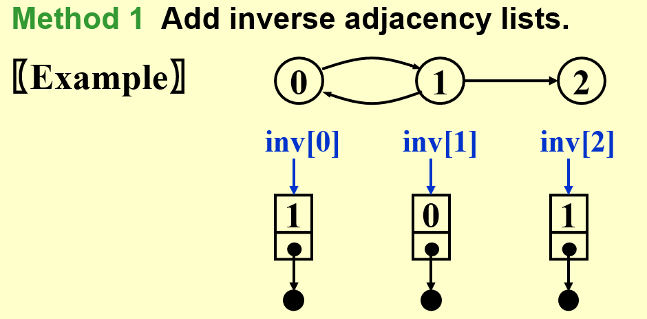
Multilist representation for adj_mat[i][j]¶
回忆 Ch.03 List
Multilists¶
For example, represent the relationship between students and the courses. Array would be too complex in space

- 每个节点表示一个 pair relationship，节点内要存储学生编号和课程编号
- 每个节点有
head list, tail list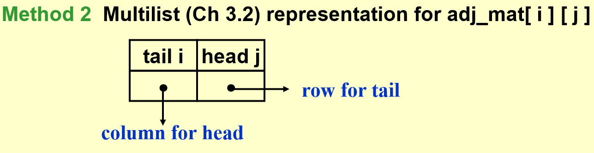
Adjacency Multilists¶
- 使用 node 表示一条边
- \(\{mark, v_1, v_2\}\)
- 构造方法
- 遍历所有 nodes
graph[i]- 对于一个节点，找到第一个被引用的边
adj_mul[j]，从节点指向这个边
- 对于一个节点，找到第一个被引用的边
- 将边从前往后进行指向被引用的位置
- 遍历所有 nodes
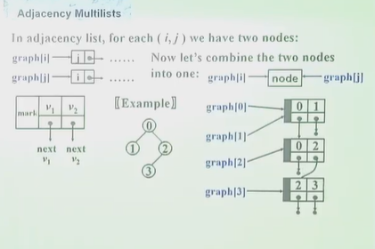
- 缺点？
- 构造麻烦
- 存储开销一样，不算 mark 都有 \((n+2e)(ptrs)+2e(ints)\)
- 优势
- mark 标记节点的 weight
- mark 也可以表示边是否被 visit
Weighted Edges¶
adj_mat[i][j]=weight- 用的更多，因为有稀疏优化，实际使用矩阵多 tensor
adj_lists/multilistsadd a weight
2 Topological Sort 拓扑排序¶
- Example: 学习课程的先修限制 prerequisites
- 课程为结点，DG
AOV Network (Activities on vertex)¶
- predecessor
- immediate & indirect
- successor
- Partial order 偏序
- 先修关系可以传递，不可自反 transitive but irreflexive
- AOV must be a DAG no cycle
Definition¶
- 如果 i 为 j 的 predecessor，则 i 出现在 j 前面
- 每次选择没有 predecessor，即没有 indegree 的节点，并将它的后继的 indegree 减一（删去这个节点）
- 可能不是唯一的 not unique
Solution¶
Solution 1¶
- 使用一个 Counter 表示 visit 的节点数
void Topsort( Graph G )
{
int Counter;
Vertex V,W;
for(Counter = 0; Counter < NumVertex; Counter++){
V = FindNewVertexOfDegreeZero();
if(V == NotAVertex){ // a cycle means no indegree 0
Error("Graph has a cycle"); break;
}
TopNum[V] = Counter; // out put in a array with value as the order
for(each W adjacent from V) indegree[W]--; // notice that "from"
}
}
- Time complexity \(O(|V|^2)\)
- Improvement
- 解决 findnewdegreezero 太慢了，可以每次找到就放在一个 queue or stack 中，直接取就行，直到队列为空
Solution 2¶
void Topsort( Graph G )
{
Queue Q;
int Counter = 0;
Vertex V, W;
Q = CreateQueue(NumVertex); MakeEmpty(Q);
for( each vertex V )
if(indegree[V] == 0) Enqueue(V, Q);
while(!isEmpty(Q)){
V = Dequeue(Q);
TopNum[V] = ++Counter; // assign next
for(each W adjacent from V)
if(--indegree[W] == 0) Enqueue(W,Q);
}
if(Counter != NumVertex)
Error("Graph has a cycle");
disposeQueue(Q);
}
- Time Complexity: \(O(|V|+|E|)\)
- worst case: 退化成 \(O(|V|^2)\)
Uniqueness of Topological Sequence
如果 DAG 中任意两个顶点之间都存在一条有向路径，A 到 B 或者 B 到 A，那么一定是唯一的
3 Shortest Path Algorithms¶
- cost function \(c(e)\) for \(e\in E(G)\), describing weighted path length
Single-Source Shortest-Path Problem¶
- 对于图中给定的一个点，找到到其他所有点的最短路径
- Negative Cost 过于复杂，可能导致无解，暂时不考虑
Unweighted Shortest Paths¶
idea¶
- 从起点出发，找到能到达的节点，就是距离为 1 的节点，visit
- Tree: Level-Order Traversal
- Breadth-first search(BFS) 广度搜索
Implementation¶
Table[i].Dist ::= distance from s to v_iTable[i].Known[i] ::= 1 if visited, 0 if notTable[i].Path ::= for tracking the path指向上一个顶点的指针，可以逆向找出路径
imp 1¶
void Unweighted ( Table T )
{
int CurrDist;
Vertex B, W;
for(CurrDist = 0; CurrDist < NumVertex; CurrDist++){
for(each vertex V) if(!T[V].Known && T[V].Dist == CurrDist){ // add another |V|, too slow
T[V].Known = ture;
for(each W adjacent to V) if(T[W].Dist == Infinity){
T[W].Dist = CurrDist + 1;
T[W].Path = V;
}
}
}
}
- worst case, linear graph
- \(T=O(|V|^2)\)
imp 2¶
void Unweighted( Teble T )
{
Queue Q;
Vertex V, W;
Q = CreateQueue(NumVertex); MakeEmpty(Q);
Enqueue(S, Q); // Enqueue the source vertex
while(!IsEmpty(Q)){
V = Dequeue(Q);
T[V].Known = true; // not really necessary
for(each W adjacent to V) if(T[W].Dist == Infinity){ // infty means not searched yet
T[W].Dist = T.[V].Dist + 1;
T[W].Path = V;
Enqueue(W, Q);
}
}
DisposeQueue(Q);
}
- 所有顶点都进行的 queue 操作
- 所有的边都走了一遍
- \(T=O(|V|+|E|)\)
Dijkstra's Algorithm(for weighted shortest paths)¶
- 使用集合 S 表示所有已经找到了最短路径的 vertex 的集合
- 对于不在 S 内的 vertex，定义距离为 S 中的 vertex 到它距离的最小值
- If the paths are generated in non-decreasing order, then
- the shortest path must go through ONLY \(v_i\in S\)
- 每次找到 S 距离最小的顶点，放入 S Greedy Method
- 如果
distance[u_1]<distance[u_2]，把u_1放入 S，随后的distance[u_2]可能会变
void Dijkstra( Table T )
{
Vertex V, W;
for(;;){ // O(|V|)
V = smallest unknown distance vertex;
if(V == NotAVertex) break; // search done
T[V].Known = ture; // only visit the smallest dist vertex
for(each W adjacent to V) // update W
if(!T[W].Known)
if(T[V].Dist + Cvw < T[W].Dist){
Decrease(T[W].Dist to T[V].Dist + Cvw);
T[W].Path = V;
}
}
}
Implementation 1 直接遍历 Good if the graph is dense¶
- V = smallest unknown distance vertex, traverse the table \(O(|V|)\)
- \(T=O(|V|^2+|E|)\) Good if the greph is dense
Implementation 2 Minheap Good if the graph is sparse¶
- V = smallest unknown distance vertex
- Keep distances in a priority queue and call DeleteMin \(O(\log |V|)\)
Decrease(T[W].Dist to T[V].Dist + Cvw)- Method 1: DecreaseKey \(O(\log |V|)\)
- \(T=O(|V|\log|V|+|E|\log|V|)=O(|E|\log|V|)\)
- Method 2: insert W with updated Dist into the priority queue
- \(T=O(|E|\log |V|)\)
- But require |E| DeleteMin with |E| space
- Method 1: DecreaseKey \(O(\log |V|)\)
Other improvements: Pairing heap (Ch.12) and Fibonacci heap (Ch.11)¶
Graphs with Negative Edge Costs¶
void WeightedNegative( Table T )
{ /* T is initialized by Figure 9.30 on p.303 */
Queue Q;
Vertex V, W;
Q = CreateQueue (NumVertex ); MakeEmpty( Q );
Enqueue( S, Q ); /* Enqueue the source vertex */
while ( !IsEmpty( Q ) ) { /*each vertex can dequeue at most |V| times*/
V = Dequeue( Q );
for ( each W adjacent to V )
if ( T[ V ].Dist + Cvw < T[ W ].Dist ) { /* no longer once per edge */
T[ W ].Dist = T[ V ].Dist + Cvw;
T[ W ].Path = V;
if ( W is not already in Q )
Enqueue( W, Q );
} /* end-if update */
} /* end-while */
DisposeQueue( Q ); /* free memory */
} /* negative-cost cycle will cause indefinite loop*/
- \(T=O(|V|*|E|)\)
- 可以设置一个
treshold，如果一条边已经遍历超过这么多次，那么就认为是死循环，程序退出
Acyclic Graphs 无环图¶
- 回忆 2 Topological Sort 拓扑排序 里的无环图，AOV Network，\(T=O(|E|+|V|)\)
Application: AOE(Activity On Edge) Networks¶
- edge: activity
- weight: 任务持续的时间
- dummy edge: 任务存在先后关系，一个由另一个决定
- vertex: status
- index of vertex
- EC: earlist completion time for this node
- LC: latest completion time for this node
- CPM: Critical Path Method
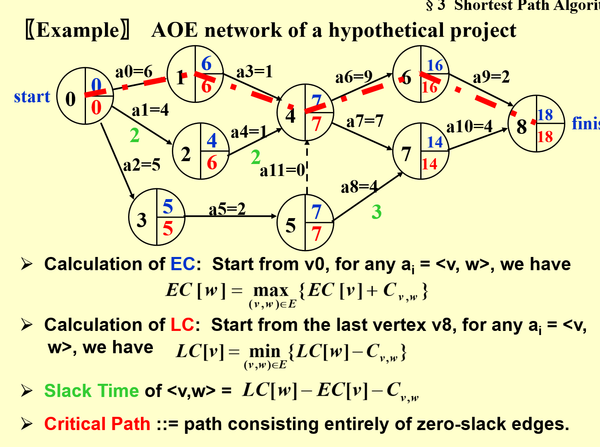
- EC：从起点开始往后计算，每次加上边，每个节点要取入度中最大的
- LC：从终点往前计算，每次减去边，每个节点要取出度中最小的
- Slack Time：松弛时间，这条边上完成任务之余可以 idle 的时间
- Critical Path：所有的 slack time 都是 0，必须盯牢的任务线
All-Pairs Shortest Path Problem¶
For all pairs of \(v_i\) and \(v_j\) \((i\ne j)\) , find the shortest path between.
Method 1 Use single-source algorithm for |V| times¶
- \(T=O(|V|^3)\)
- works fast on sparse graph
Method 2 in Ch.10¶
- works faster on dense graphs
4 Network Flow Problems 网络流问题¶
- 每条边都存在最大流量限制，有向图
- 从 source 到 sind 的最大流量问题
A Simple Algorithm¶
- 根据原始的 graph，创建两个 graph
- Flow network \(G_f\)
- Residual network \(G_r\) 残差网络
- Find any path from s to v in \(G_r\), called Augmenting path
- Take the minimum edge on this path as the amount of flow and add to \(G_f\) 找到瓶颈，在 flow 里整条路线上更新到这个流量
- 并更新 residual
- 如果 residual 中仍然存在 path，继续 step 1；否则结束
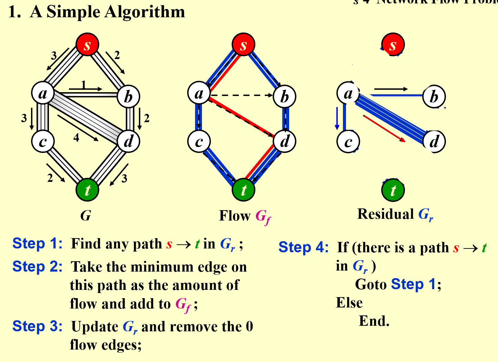
问题 1¶
- 如果使用 greedy method，可能提前导致路封死
A Solution - allow the algorithm to undo its decision¶
- 更新 residual 时，加上反向的路径，有一个改错的机会
- Proposition: 如果边是有理数，一定会找到最大的流量
- Note: The algorithm works for G with cycles as well
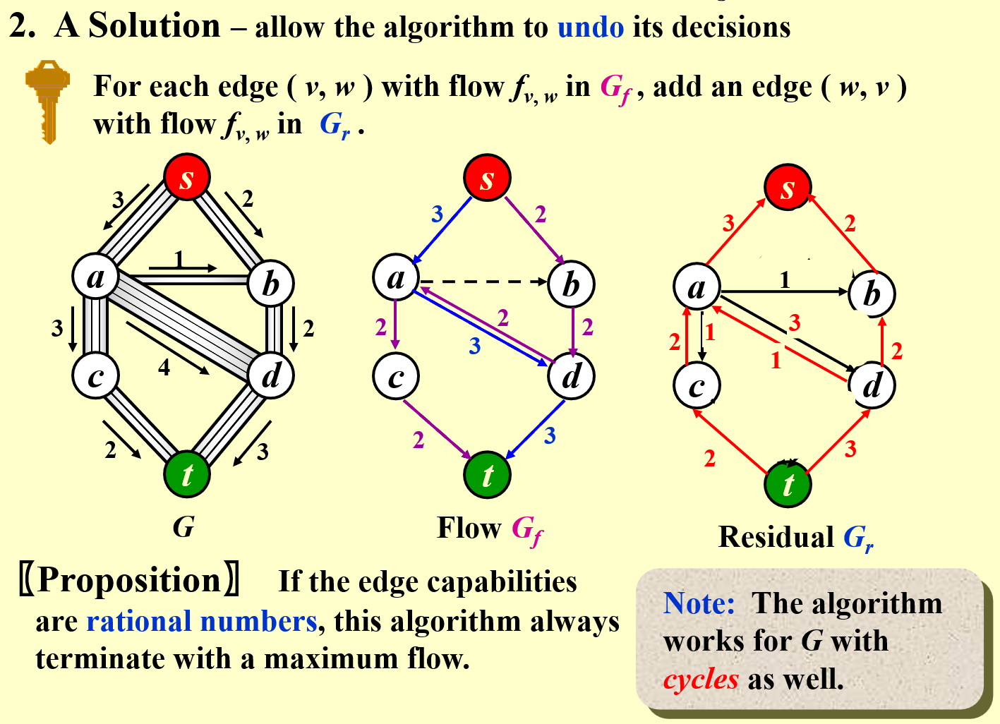
Analysis ( If the capacities are all integers )¶
- An augmenting path can be found by an unweighied shortest path algorithm
- \(T=O(f*|E|)\), f is the maximum flow
- Always choose the augmenting path that allows the largest increase in flow modify Dijkstra's algorithm
-
\[T=T_{augmentation}*T_{find\space a\space path}=O(|E|\log cap_{max})*O(|E|\log |V|)=O(|E|^2\log |V|)\]
- if cap_max the maximum of capacity is a small integer
-
- Always choose the augmenting path that has the least number of edges
-
\[T=T_{augmentation}*T_{find\,a\,path}=O(|E|)*O(|E|*|V|)=O(|E|^2|V|)\]
- Note
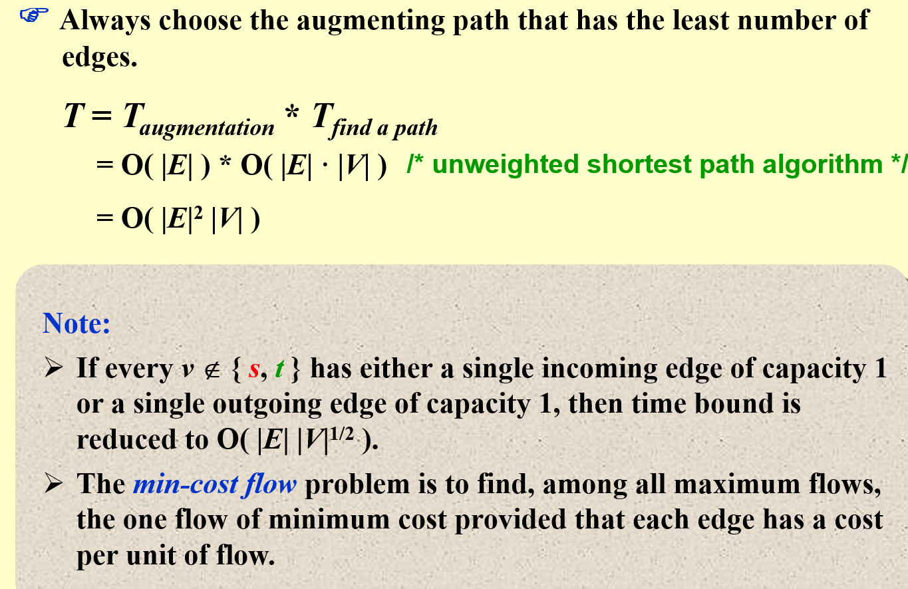
-
5 Minimum Spanning Tree¶
Definition: A spanning tree of graph G is a tree which consists of V(G) and a subset of E(G)
- acyclic: the number of edges is |V|-1
- minimun: for the total cost of edges is minimized 所有的权重和最小
- spanning: it covers every vertex
- A minimum spanning tree exists iff G is connected
- Adding a non-tree edge to a spanning tree, we obtain a cycle
Greedy Method¶
- 只使用 graph 里有的边
- 一定恰好使用 |V|-1 条边
- 使用的边不能形成循环
Prim's Algorithm - grow a tree¶
- Similiar to Dijkstra
- 每次选最小距离的
Kruskal's Algorithm - maintain a forest¶
- 每次找距离最小的边
- 如果不形成 cycle，那么将树连接，删除这条边
- 如果形成 cycle，那么放弃这条边
void Kruskal ( Graph G )
{
T = {};
while ( T contains less than |V|-1 edges && E is not empty ) {
choose a least cost edge(V, w) from E; // deleteMin
delete (v, w) from E;
if((v, w) does not create a cycle in T)
add (v, w) to T; // union and find
}
if(T contains fewer than |V|-1 edges)
Error("No spanning tree");
}
Time Complexity
- 初始化一个空的边集 \(O(1)\)
- 对边的权重进行排序 \(O(|E|\log |E|)\)
- 按照边的权重从小到大，进行并查集操作 \(O(|E|\log |V|)\)
- 如果采用 union-by-rank and path-compression，并查集能优化成 \(O(|E|\alpha(|E|, |V|))\)
- 这里的 \(\alpha\) 是反阿克曼函数，接近于常数
- 所以，总体的时间复杂度为 \(O(|E|\log |E|)\)
6 Applications of Depth-First Search¶
a generalization of preorder traversal
- \(T=O(|E|+|V|)\)
- BFS: 每次找一层队列，while 循环 VS DFS: 每次先找到所有的递归
Undirected Graphs¶
- DFS 能够访问的所有节点，构成一个 component
void ListComponents( Graph G )
{
for(each V in G)
if(!visited[V]){
DFS(V);
printf("\n");
} // 每次访问打印节点index，每两个component之间换行
}
Biconnectivity¶
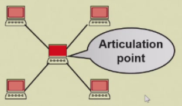
- Articulation Point: v is an articulation point if G' = deleteVertex(G, v) has at least 2 connected components 如果把这个节点删掉之后，图被分开了
- Biconnected graph: G is a biconnected graph if G is connected and has no articulation points
- A biconnected component is a maximal biconnected subgraph
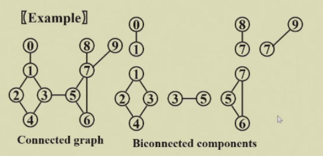
Finding the biconnected components¶
1. Use DFS to obtain a spanning tree of G¶
- spanning tree 重新按照 visit 顺序编号，得到 DFS number
- Back edges 图中有但树中没有的边
- Note: if u is an ancestor of v, then Num(u)<Num(v)
2. Find the articulation points in G¶
- The root is an articulation point iff it has at least 2 children
- Any other vertex is an articulation point iff u has at least 1 child, and it is impossible to move down at least 1 step and then jump up to u's ancestor
- 至少有一个孩子，而且无法从后代中通过 back edge 回到祖先
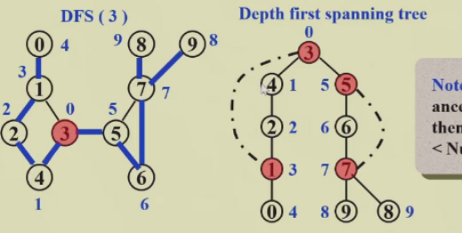
3. \(Low(u)=min\{Num(u),min\{Low(w)|w\,is\,a\,child\,of\,u\},min\{Num(w)|(u,w)is\,a\,back\,edge\}\}\)¶
- 是 自己的 number、children 中最小的 low number、自己 backedge 另一头中最小的 number 中最小的
- 计算 Low number
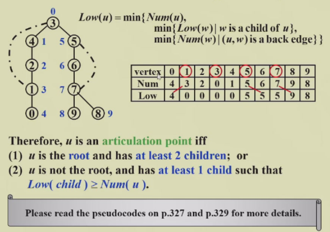
- 根节点 的 low number 是 0
- 先找所有 backedge 影响的 low number 因为 backedge 要找的是另一头的 number， 已经全部已知
- DFS，每次返回本节点的 low number，每次比较自己的 number 和所有返回值，取最小的
%%Pseudo-code on p.327 and p.329%%
4. Therefore, u is an articulation point iff¶
- u is the root and has at least 2 children; or
- u is not the root, and has at least 1 child such that \(Low(child)\ge Num(u)\)
Euler Circuits¶
- Euler tour: draw each line exactly once without lifting your pen from the paper 一笔画
- Euler curcuit: draw each line exactly once without lifting your pen from the paper, AND finish at the startgin point
- Propositions
- An Euler circuit is possible iff the graph is connected and each vertex has an even degree.
- An Euler tour is possible if there are exactly two vertices having odd degree. One must start at one of the odd-degree vertices.
algorithm¶
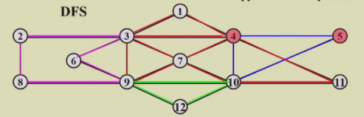
- the path should be maintained as a linked list
- for each adjacency list, maintain a pointer to the last edge scanned
- \(T=O(|E|+|V|)\)
- Other algorithm: Hamilton Cycle
HW¶
HW 8¶
- If a directed graph G=(V, E) is weakly connected, then there must be at least |V| edges in G. F
- weak / strong connection
- 弱连接指的是存在一条路径，经过两点
- 强连接指的是，从 A 出发可以到 B，从 B 出发也可以到 A
- 应该是 |V|-1，只要有 undirected path 就行
- weak / strong connection
- Given the adjacency list of a directed graph as shown by the figure. There is(are) __ strongly connected component(s).
- 注意单个 vertex 也算是子图
- 首先看哪些节点没有入或者没有出的，一定是单节点的子图
函数题：Is Topological Order¶
idea 1¶
- 遍历，建立
cntIndegree[num]保存入度，记得初始化为 - 遍历输入，对于每个输入，如果对应
cntIndegree是 0，则正确- 并将 successor 的入度减一
- 如果入度还不是 0 的节点被 visit，则不正确，退出 false
test¶
- 错误了，因为AdjV 里的节点编号也是从 0 开始的
- 修改之后就正确了
编程题：Hamiltonian Cycle¶
idea 1¶
- 建立图，adjmat/adjlist?
- 边界为 200 vertices，40000 个 int，预计占用 2^18 byte，空间足够，使用完全 adjmat
- 对于每一个输入 query
- 首先数量需要是 Nv+1 以上
- 然后首尾相同
- 其次需要包含所有数字
- 再次检查是否都可以连通
关于循环控制语句
C 语言中没有能够直接 break 或者 continue 上层循环的用法，需要用一个 flag 来传递循环控制操作！
HW 9¶
- In a weighted undirected graph, if the length of the shortest path from
btoais 12, and there exists an edge of weight 2 betweencandb, then the length of the shortest path fromctoamust be no less than 10.- T
- 如果 less than 10 的话，
btoa的最短就比 12 还小了
HW 10¶
7-1 Universal Travel Sites¶
- 就是最大网络流问题，但是加上了字符串，最好有字典，或者使用 python
- 思路
- 读图
- 边里直接存节点名称，全部使用 strcmp，可以避免字典，这里用 python 来实现
- 每个边同时存储 \(G_r, G_f\)
- unweighted 路径搜索，返回路径 直到搜不到 break
- 根据路径更新 \(G_r, G_f\)
- 读图
总之，灵活切换 python 来实现是正确的选择
Uniqueness of MST¶
- 具有相同拓扑结构的 MST 就是相同的
- 任何一棵树都可以 reroot，但是边集不变
- 只要边集相同，就认为 MST 相同
如果能够建立最小生成树，如何判断是否唯一？
如果出现了相同权重的
idea¶
- 对 edge 按照 weight 升序排列
- 使用并查集，路径压缩，遍历 edge
- 对于路径长度 d
- 首先对所有的长度为 d 的路径进行分析，是否能够加入图中 是否成环，并进行记录
- 然后进行逐个加入
- 对于路径长度 d
- 最后看看如果存在可能加入 MST 但是实际上没有加入的路径，那么 MST 不唯一
注意¶
- 需要使用快速排序，不然超时
- 实现过于麻烦
HW 11¶
- Apply DFS to a directed acyclic graph, and output the vertex before the end of each recursion. The output sequence will be: reversely topologically sorted
- 因为是在返回的时候打印的，而 DFS 的顺序是顺着拓扑排序深入的
- 注意 有向无环图就是树，这就是树的 DFS
- Use simple insertion sort to sort 10 numbers from non-decreasing to non-increasing, the possible numbers of comparisons and movements are:
- 一共有 45 个逆序对，所以交换的次数不会大于 45
- 选 D. 45, 44
函数题：Strongly Connected Components¶
- 注意不是连通是 digraph 强连通，所以不是简单的 Undirected Graphs
Idea¶
如何找到某个顶点所在的 SCC ?
- 首先，一个 SCC 的定义是，内部所有两个顶点之间都存在双向路径
- 那么 V 可以找到其他所有节点，其他所有节点也可以找到 V
- 满足上面这个条件，其他节点就可以相互找到，使用 V 作为跳板
- 所以得到了 SCC 的 充要条件
- for all V in G
- if not visited
- find the SCC it is in
getStronglyConnectedComponent() - print(\n)
- find the SCC it is in
- if not visited
getSCC(Graph G, Vertex V)- V 出发能找到的节点构成集合 From
- 能找到 V 的节点构成集合 To
- 取交集，加上 V 本身，就是 V 所在的最大 SCC
- 使用
adj_mat利用 Warshall 算法可以更加方便地解决- 对于
adj_mat使用 Warshall 算法，得到目标矩阵 - 对于每个 unvisited 的顶点 V
- 取矩阵里第 V 行和第 V 列的 AND
- 这个结果就是 V 所在的 SCC
- visit SCC 内所有的顶点 打印，标记
- 取矩阵里第 V 行和第 V 列的 AND
- 对于